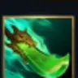
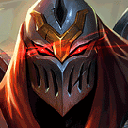

核心裝備
 星蝕
星蝕第一件提供爆發、穿透與護盾，適合短時間進出。
- 巨蛇鋒牙
ARAM 護盾英雄多，破盾可明顯提高爆殺成功率。
 席利妲咒怨
席利妲咒怨高額物穿與緩速讓手裏劍消耗更穩。

精進之矛技能循環加快，讓影子與手裏劍更頻繁。
 守護天使
守護天使後期大絕深度切入時提供一次失誤保險。

Zed · 影分身消耗／單點爆殺型物理刺客
不要每波都大絕先手。先用二技影子＋一、三技消耗，逼出護盾或保命技能後再進場；大絕落地後有 0.5 秒不能回影，必須預先想好第二個影子與撤退位置。
本站評級理由：劫在標準 ARAM 仍有 110% 傷害輸出，雙影手裏劍能從安全距離壓血，抓到後排空檔時爆發非常高；但 7.2 移除通用中婭後又增加大絕回影 0.5 秒鎖定與冷卻，進場判斷更重要。
7.0a 標準 ARAM 將劫傷害輸出 115%→110%。7.2 又讓大絕落地後 0.5 秒無法立刻回影，冷卻調整為 85/70/55 秒。
第一件提供爆發、穿透與護盾，適合短時間進出。
ARAM 護盾英雄多，破盾可明顯提高爆殺成功率。
高額物穿與緩速讓手裏劍消耗更穩。

技能循環加快，讓影子與手裏劍更頻繁。
後期大絕深度切入時提供一次失誤保險。
提供續航，讓遠距消耗後更容易維持血量。
需要更高爆發與物穿時使用。

雙影技能與普攻可快速疊層，長團比單次電刑更穩。
持續戰鬥提高整體傷害。

對高生命前排與鬥士也能維持壓力。

提高普攻手感與收尾效率。
技能加速讓影子循環更快。

補大絕後追擊、換位與逃生。

提高單點爆殺與重創能力。
1 技 > 3 技 > 2 技
主 1 提高手裏劍核心傷害，次 3 強化近距爆發與減速；二技主要提供影子位置與能量回復，大絕能點就點。
先用二技影子配一技消耗，別為了被動普攻走進五人控制範圍。
星蝕與穿透裝成形後找後排失位。先消耗再大絕，落地 0.5 秒鎖回影期間要用移動與技能躲關鍵控制。
不要單獨衝第一個看到的脆皮。等前排開戰、保命技能交掉後再切入，守護天使可用時才做最深追擊。
敵方單一關鍵控制會阻止進場時使用。
 妖夢鬼刀
妖夢鬼刀需要更高移速與側角壓力時使用。
 致死宣告
致死宣告敵方高回復且需要重創時使用。
看遊戲卡片下方分類 → 點相同分類 → 看左側 S+／S／A。
手裏劍與影子連招是主要傷害來源，技能加速直接決定消耗與刺殺頻率。
影子換位與大絕都屬高價值位移，身法增幅能反覆觸發。
換影後的穿透、防禦與追加傷害能強化進場與撤退兩端。
投射物強化、技能暴擊與施放大絕無敵都非常適合劫。
落地後短時間需要調整位置等待影子解鎖，跑速能提高生存。
v80.17.0 ARAM A 最終批：套用標準 ARAM 110% 傷害；同步 7.2 大絕回影鎖定與冷卻調整。
ARAM 使用獨立於召喚峽谷的資料集；本站會把官方模式平衡、單線 5v5 特性與出裝／符文適配分開判斷，而不是直接複製峽谷配置。